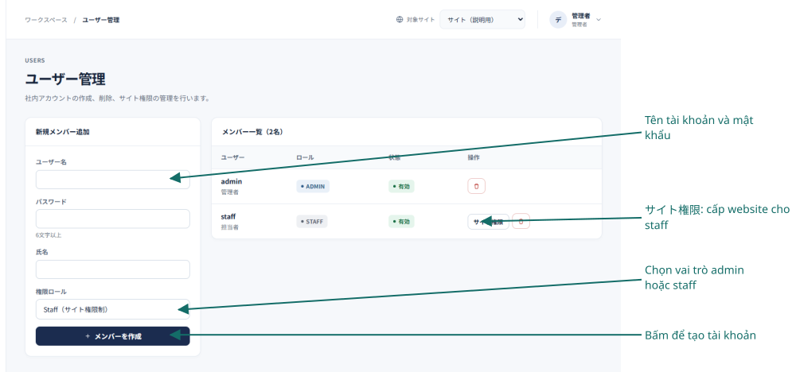

Tạo tài khoản
Điền tài khoản + mật khẩu + vai trò → メンバーを作成 → xóa ô nhập → cập nhật danh sách.
Mật khẩu tối thiểu 6 ký tự. Chọn Staff cho nhân viên; chọn Admin cho người quản trị toàn hệ thống.
Cấp website cho nhân viên
サイト権限 → chọn website → 保存する → đóng hộp và lưu quyền. Nếu Nhấn Hủy → không lưu.
Kết quả cần thấy
Nhân viên quản lý nội dung trong các website được cấp; quyền duyệt và quản lý tài khoản thuộc quản trị viên.
Xóa tài khoản
- Kiểm tra đúng tên tài khoản trong danh sách.
- Bấm biểu tượng thùng rác và xác nhận khi chắc chắn.